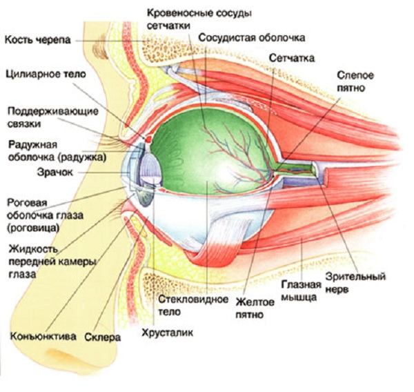
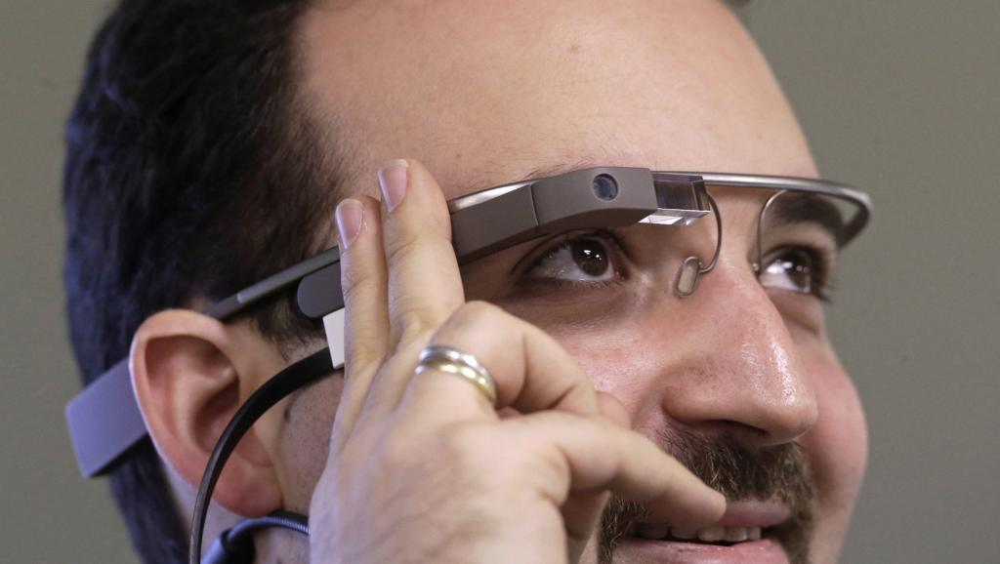

| Строение глаза. | Болезни зрения. | Иллюзии. | Факторы, влияющие на изменение зрения. | Правда или миф. | Методы лечения зрения в 21 веке. | Зрение будущего. |
Из всех органов чувств человека глаз всегда признавался наилучшим даром и чудеснейшим произведением творческой силы природы.Сократ:
Хорошие врачи говорят, что невозможно лечить одни глаза, а необходимо в то же время лечить голову, если желают, чтобы поправились глаза.
Строение глаза.
Светочувствительный аппарат глаза выстилает заднюю стенку глазного яблока и занимает 72% площади его внутренней поверхности. Он называется сетчаткой. Сетчатка имеет форму пластинки толщиной приблизительно в четверть миллиметра и состоит из 10 слоев. По своему происхождению сетчатка является выдвинутой вперед частью мозга: в процессе развития эмбриона сетчатка образуется из глазных пузырей, которые являются выпячиваниями передней стенки первичного мозгового пузыря. Главный из ее слоев - это слой светочувствительных клеток - фоторецепторов. Они бывают двух видов: палочки и колбочки. Такие названия они получили благодаря своей форме. Палочек в каждом глазу насчитывается около 125-130 миллионов. Они характеризуются высокой чувствительностью к свету и работают при низкой освещенности, то есть отвечают за сумеречное зрение. Однако палочки не способны различать цвета, и с их помощью мы видим в черно-белом цвете. Они содержат зрительный пигмент родопсин. Палочки расположены по всей сетчатке, кроме самого центра, поэтому благодаря именно им обнаруживаются предметы на периферии поля зрения. Колбочек гораздо меньше, чем палочек - около 6-7 миллионов в сетчатке каждого глаза. Колбочки обеспечивают цветовое зрение, но они в 100 раз менее чувствительны к свету, чем палочки. Поэтому цветное зрение - дневное, и в темноте, когда работают только палочки, человек не может различать цвета. Колбочки гораздо лучше, чем палочки, воспринимают быстрые движения. Пигмент колбочек, которому мы обязаны цветным зрением, называется йодопсин. Палочки бывают «синие», «зеленые» и «красные», в зависимости от длины световой волны, которая они преимущественно поглощают. Колбочки расположены, главным образом, в центре сетчатки, в так называемом жёлтом пятне (еще его называют макула). В этом месте толщина сетчатки минимальная (0.05-0.08 мм) и отсутствуют все слои, кроме слоя колбочек. Макула имеет желтый цвет из-за высокого содержания желтого пигмента. Желтым пятном человек видит лучше всего: вся световая информация, попадающая на эту область сетчатки, передается наиболее полно и без искажений, с максимальной четкостью. Сетчатка человека устроена необычно: она как бы перевернута. Слой сетчатки со светочувствительными клетками находится не спереди, со стороны стекловидного тела, как можно было бы ожидать, а сзади, со стороны сосудистой оболочки. Чтобы добраться до палочек и колбочек, свет должен сначала пробраться через 9 остальных слоев сетчатки. Между сетчаткой и сосудистой оболочкой находится пигментный слой, содержащий черный пигмент - меланин. Этот пигмент поглощает свет, идущий через сетчатку, и не дает ему отражаться обратно, рассеиваться внутри глаза. У альбиносов - людей с врождённым отсутствием меланина во всех клетках тела - при высокой освещенности свет внутри глазного яблока отражается во всех направлениях поверхностями сетчатки. Как результат, одиночное дискретное пятно света, которое в норме возбудило бы только несколько палочек или колбочек, отражается повсюду и возбуждает много рецепторов. Поэтому у альбиносов острота зрения редко бывает выше 0,2-0,1 при норме 1,0.

Под воздействием световых лучей в фоторецепторах происходит фотохимическая реакция - распад зрительных пигментов. В результате этой реакции выделяется энергия. Эта энергия в виде электрического сигнала передается на промежуточные клетки - биполяры (их еще называют интернейроны или вставочные нейроны), а затем на ганглионарные клетки, которые генерируют нервные импульсы и по нервным волокнам отправляют их в мозг. Каждая колбочка соединяется через биполярную клетку с одной ганглионарной клеткой. А вот сигналы палочек, идущие к ганглионарным клеткам, подвергаются так называемой конвергенции: к одной биполярной клетке подсоединяется несколько палочек, она суммирует их сигналы и передает на одну ганглионарную клетку. Конвергенция позволяет увеличивать световую чувствительность глаза, а также чувствительность периферийного зрения к движениям, тогда как в случае колбочек отсутствие суммирования позволяет увеличивать остроту зрения, но при этом чувствительность "колбочного" зрения понижена. Нервные волокна со всей сетчатки собираются в единый зрительный нерв в особой области сетчатки – слепом пятне. Оно расположено в том месте, где зрительный нерв выходит из глаза, и называется так, потому что все, что попадает на эту область, исчезает из поля зрения человека. По зрительному нерву информация об изображении с сетчатки поступает в мозг и там обрабатывается, таким образом, что мы видим конечную картину окружающего мира. В настоящее время уже многое известно о механизмах зрительной системы.
Но нужно честно признать, что современная наука еще не знает до конца, как именно мозг справляется со сложнейшей задачей преобразования электрических сигналов сетчатки в зрительную сцену в том виде, как мы ее воспринимаем - со всей сложностью форм, глубины, движения и цвета. Но изучение этого вопроса не стоит на месте, и, будем надеяться, наука в будущем разгадает все тайны зрительного анализатора и сможет использовать их на практике - в медицине, кибернетике и других областях.
Болезни зрения.
Количество болезней глаз, как и их симптомов, очень велико. Согласно данным статистики, на нашей планете большинство людей имеют те или иные проблемы со зрением. К числу наиболее распространенных можно отнести следующие патологии.
АМБЛИОПИЯ («ЛЕНИВЫЙ ГЛАЗ»)
При таком диагнозе у пациента могут наблюдаться те или иные нарушения зрения, которые вызваны функциональными расстройствами зрительного анализатора. Особенности лечения и прогнозы зависят от конкретной формы амблиопии.
МАКУЛОДИСТРОФИЯ
При такой болезни поражается сетчатка, следствием чего является значительное ухудшение зрения. Причинами макулодистрофии могут быть как атеросклеротические бляшки в сосудах, мешающие полноценному притоку питательных веществ к тканям глаза, так и различные вирусные заболевания у человека. Важно помнить, что даже после проведения курса лечения эта патология может вернуться снова. Поэтому при первых проявлениях симптомов немедленно обратитесь к врачу.
КОНЪЮКТИВИТ
Это воспаление слизистой оболочки глазного яблока, которое может быть вызвано как аллергией на лекарственные средства или косметику, так и бактериальной или вирусной инфекцией. Для лечения используются капли и мази для глаз с антибиотикам или противовирусными веществами.
ДАЛЬТОНИЗМ
Указанное нарушение зрения является врожденным и представляет собой отсутствие у глаз возможности различать все видимые цвета спектра. В большинстве случаев такое состояние не поддается лечению.
СКЛЕРИТ
При таком заболевании воспаляется склера и эписклера. Проявляется в виде больших очагов покраснений, ощутимых болей. У ряда пациентов также отмечается светобоязнь. Лечение данного заболевания глаз проводится при помощи специализированных медицинских препаратов, которые подбирает квалифицированный офтальмолог. Самолечение в данном случае не только не принесет желаемых результатов – оно может только ухудшить состояние глаз.
КЕРАТИТ
При данной болезни воспаляется роговица. Причиной этого могут быть как вирусы или бактерии, так и травмы различного характера. Кератит сопровождается большим количеством симптомов, среди которых: боль в глазах, слезотечение, покраснение. При лечении используются капли и мази, содержащее противовирусные или противогрибковые вещества.
БЛЕФАРИТ
Эта болезнь глаз выражается в воспалении края века. В большинстве случаев возбудителем является золотистый стафилококк. Схема лечения напрямую зависит от типа блефарита и степени его выраженности.
ДИСТРОФИЯ СЕТЧАТКИ
В данном случае речь идет о целой группе заболеваний, при которых поражается сетчатка глаза человека. Лечение строго индивидуально и зависит от наличия или отсутствия показаний.
БЛИЗОРУКОСТЬ
Данное заболевание является одним из наиболее распространенных. Человек с близорукостью не способен различать предметы, расположенные вдалеке, но при этом отчетливо видит то, что находится прямо перед ним.
ХАЛЯЗИОН
Указанная болезнь представляет собой инфекционноевоспаление края века. При отсутствии должного лечения велик риск дальнейшего распространения инфекции.
СИНДРОМ СУХОГО ГЛАЗАЭто состояние, при котором человек отмечает постоянную сухость в глазах. Часто оно вызвано длительной работой за компьютером. Один из методов лечения – применение специализированных глазных капель.
ЯЧМЕНЬ
Эта болезнь проявляется в виде воспаленного гнойного мешочка на краю века. Самостоятельное выдавливание категорически запрещается. В качестве одной из терапевтических мер применяется обработка спиртом и зеленкой, мазями с антибиотиками.
КАТАРАКТА
Данная болезнь представляет собой помутнение хрусталика. Оно может быть вызвано как сопутствующими заболеваниями (к примеру, сахарным диабетом), так и возрастными изменениями. Наиболее эффективным методом лечения катаракты является хирургическое вмешательство, при котором помутневший хрусталик удаляется, а на его место устанавливается интраокуляная линза. Если пациент не хочет соглашаться на операцию, врачи в силах притормозить развитие катаракты – для этого они прописывают различные медикаменты для глаз.
Обманом зрения называют такие эффекты зрительного восприятия, которые возникают непроизвольно или сознательно у человека наблюдающего определенные изображения. Такие эффекты называют также оптическими иллюзиями – ошибками зрительного восприятия, причиной которых являются неточность или же неадекватность процессов, происходящих при неосознаваемой коррекции зрительных образов. Кроме того, в процессе возникновения оптических иллюзий также принимают участие физиологические особенности органов зрения и психологические аспекты визуального восприятия. Обман зрения, представленный в этом разделе сайта, заключается в искажении восприятия путем неправильной оценки длины отрезков, величины углов, цветов видимого объекта и др. Его наиболее популярными типами являются иллюзии восприятия глубины, перевертыши, стереопары и иллюзии движения. К иллюзиям восприятия глубины относится неадекватное отражение изображенного предмета. Наиболее известными примерами таких иллюзий являются двухмерные контурные картинки – при их наблюдении, они бессознательно воспринимаются мозгом как одно выпуклые. Кроме того, искажения при восприятии глубины способны привести к неправильной оценке геометрических размеров (в некоторых случаях ошибка достигает 25%). Обман зрения перевертыш заключается в изображении такой картинки, восприятие которой зависит от направления взгляда. Стереопары позволяют наблюдать стереоскопическое изображение путем наложения их на периодические структуры. Фокусировка взгляда за картинкой приводит к наблюдению стереоскопического эффекта. Движущиеся иллюзии представляют собой периодические изображения, продолжительный взгляд на которые приводит к визуальному восприятию перемещения из отдельных частей.
Уильям Блейк:Посредством глаза, а не глазом, cмотреть на мир умеет разум.
Факторы, влияющие на изменение зрения.
Почти каждый человек рождается с нормальными здоровыми глазами и только не более 2 % детей имеют деформированное глазное яблоко. Большинство общих проблем со зрением связаны не только с наследственностью, но и с эволюционными проблемами со зрением, которые обычно выражаются в форме слабых глазных движений, конвергенции (схождение глаз в одной точке), изменения клинической рефракции - близорукости, дальнозоркости, возрастной дальнозоркости, астигматизме, а также косоглазии и другими. С древнейших времен и до наших дней ученые офтальмологи изучают заболевания глаз, факторов влияющих на ухудшение зрения и способов их предотвращения. Современные специалисты такие как: Э. Д. Рубан, О. В. Степанова Э. Д. Юровская, И. К. Гайнутдинов, Г. Бограш они разработали ряд методик по изучению факторов и их профилактики. Они выявили множество факторов влияющих на ухудшение зрения.
Два главных признака, по которым их различают: генетический и приобретенный.
Генетический фактор. О значении наследственности в появлении и развитии приобретенной близорукости известно давно, У близоруких родителей чаще бывают близорукие дети. В семьях, где миопия имеется у обоих родителей, частота ее выше, чем в семьях, где только один родитель близорук.
Существует множество приобретенных факторов. Рассмотрим некоторые из них. Нагрузочный фактор - влияние на организм внешних факторов. Зрительная перегрузка является главной причиной приобретенной близорукости. Предлагаемая обществом, а зачастую и родителями, образовательная зрительная нагрузка превышает аккомодационные возможности глаз. Раннее начало занятий является причиной появления миопии у дошкольников. Злоупотребление телевидением, видео и пользованием компьютером, к сожалению, играет большую роль в развитии близорукости у значительной части учащихся.
Стрессовьий фактор - важнейший из неспецифических факторов. Тяжелые заболевания, травмы, интоксикации, психические переживания чаще в сочетании со зрительной нагрузкой способствуют появлению и прогрессированию приобретенной близорукости.
Возрастной фактор. Растущий, формирующийся организм и его отдельные органы более чувствительны к внешним влияниям, чем органы взрослого, сформированного организма. Это в полной мере относится к глазам. Чем старше ребенок, тем меньше вероятность возникновения у него близорукости. Хотя в данной ситуации не все так просто. Во время учебы в школе отмечается два пика в появлении миопии: в 7—9 лет и в 13—16 лет. Первый пик адаптационный, второй связан с периодом бурного роста у подростков.
Состояние позвоночника. Хорошее зрение еще зависит и от правильной осанки. Одна из причин плохой осанки - освещение. Да, именно освещение, ведь недостаток света заставляет школьника наклоняться к рабочей поверхности как можно ниже - "писать носом". Плохая осанка в положении сидя оказывает негативное влияние на шейный отдел и служит причиной смещения шейных позвонков. Смещения позвонков могут вызвать ущемление или раздражение нервов, что приводит к осложнениям в некоторых системах организма (так, например, второй шейный позвонок отвечает за зрение). Среди прочего, смещение позвонков служит причиной заболеваний глаз и проблем со зрением.
Вредные привычки. Ученые провели исследование и выяснили, что наличие привычки курения влияет на острые приступы головной боли. У 22% участников имелась история мигрени или других головных болей. Как оказалось, люди с мозговыми расстройствами в 1,3-1,5 раза увеличивают риск формирования ретинопатии, сложного глазного заболевания и как следствие ухудшения зрения. Здоровье глаз напрямую зависит от качества питания. Неправильное питание, нехватка витаминов, цинка, биологически активных веществ лютеина и зеаксантина могут привести к различным заболеваниям глаз и нарушению зрения.
Витамины С, Е и селен защищают глаза от активно образующихся под воздействием ультрафиолетовых лучей свободных радикалов. Цинк помогает стабилизировать защитный пигмент клетчатки глаза. Лютеин и зеаксантин – два каротиноида, отвечающие за плотность пигмента в сетчатке, играют ключевую роль в защите глаз. Научные исследования доказали, что оба компонента выступают в роли «внутренних солнечных очков», так как они «фильтруют» голубой свет и защищают от свободных радикалов. Эти каротиноиды – самые главные составляющие защитной системы глаз. Здоровый рацион питания, в котором присутствуют капуста, шпинат, брокколи, орехи, брюссельская капуста, кукуруза и т. д. способствует укреплению и улучшению работы различных структур глаза и может предотвратить нарушения зрения.
К ухудшению зрения приводит и длительная работа за компьютером. Монитор компьютера является источником повышенной опасности для глаз, так как излучает ультрафиолетовый свет, действие которого усиливается при использовании люминесцентных ламп. В сочетании с напряженной работой глаз это может вызвать быстрое утомление, головные боли, снижение работоспособности, резь в глазах и слезоточивость. Данные статистики показали, что от 50% до 90% людей, работающих за компьютером, обращаются к врачам именно с этими жалобами, которые объединили термином - компьютерный зрительный синдром. Причиной может быть и психологический дискомфорт. Если в шумно, сложная психологическая обстановка -это может вызвать повышенную усталость глаз и, как следствие, ухудшение зрения.
А так же существует еще несколько факторов:
Методика поддержания хорошего зрения:
Правда или миф.
Глаза — это тот инструмент, с помощью которого мы видим наш мир, накапливаем информацию, осмысляем и осознаем окружающую обстановку. Зрение — это подарок природы, который надо беречь. Однако в век компьютеров, человек стал все больше и больше времени проводить перед экраном. От напряжения и усталости глаз у людей начали слезиться глаза, а в отдельных случаях некоторые стали обращать внимание на то, что их зрение стало хуже. Так что же делать в такой ситуации? Как сохранить свое зрение и не допустить появления серьезных заболеваний глаз. Вот Вам несколько простых советов о том, как сохранить свое зрение.
1. «Если сидеть близко к телевизору – зрение портится».
Это самая-самая распространенная страшилка прошлых лет. Теперь большинство врачей на вопрос «портится ли зрение от телевизора» отвечают – смотреть телевизор с близкого расстояния можно. (Правда, зачем?). Не доказана прямая связь между просмотром телепередач и ухудшением зрения. Несомненно, глаза могут устать, если вы провели много времени близко от экрана, особенно при плохом освещении. Но это будет всего лишь усталость, близорукость, таким образом, вы не приобретете.
2. «Чтение при плохом освещении портит зрение».
Также дело обстоит и с чтением при плохом освещении. Сразу же хочется отобрать у ребенка книгу, и запретить ему читать в полумраке. В принципе, так и надо сделать, зачем лишний раз напрягать глаза, но знайте, что врачи считают ситуацию с чтением аналогичной просмотру телевизору — глаза могут устать, но быстро восстановятся.
3. «Ношение очков ухудшает зрение».
На вопрос «портится ли зрение от очков» врачи также дают однозначный ответ — зрение может ухудшать только ношение очков с неправильно подобранными линзами, поэтому очень ответственно относимся к походу к офтальмологу. Если очки не носить в надежде, что без них глаза получат стимуляцию и перестанут лениться — надежды не оправдаются, зрение не улучшится, а вы заработаете дополнительные морщины, постоянно жмурясь, чтобы сделать картинку более резкой.
4. «Зрение ухудшается, если его не беречь и постоянно нагружать».
Это не так. Решив, что сегодня вы слишком много «пользовались» зрением и, отложив книгу на потом, вы нисколько не помогаете его «сбережению», а просто лишаете себя удовольствия от чтения. Глаза от такого решения не получат никакого прока, они предназначены чтобы служить нам всю жизнь.
5. «Людям со слабым зрением нужно как можно меньше читать и работать с мелкими предметами, например, вышивать».
Большинство убеждено, что такая деятельность приводит к еще большему износу глаз. Но наш глаз можно сравнить с фотокамерой, которая не портится оттого, что мы снимаем ей мелкие предметы. Поэтому, правильно подобрав очки, вы можете читать, вышивать и изготавливать миниатюры без боязни ухудшить зрение.
6. «Если смотреть на солнце через темные очки – зрение не пострадает».
Даже через самые дорогостоящие и качественные очки смотреть на солнце нельзя. От этого страдают все составляющие глаза: сетчатка, роговица, хрусталик. Вы можете получить не только головную боль, но и ожог глаз и даже на время лишиться зрения. Причем таким же будет ответ и на вопрос «вредно ли смотреть на солнечное затмение» – вредно. Если смотреть на него незащищенными глазами, можно совсем за небольшой промежуток времени получить серьезные проблемы. Наблюдать это природное явление можно только с помощью специальных защитных приспособлений.
7. «Заболевания глаз и общее ухудшение зрения невозможно предотвратить».
Предотвратить возможно. Но для этого стоит относиться к глазам так же как и к другим органам – рукам, ногам, сердцу… Если у нас заболело сердце, мы идем к врачу для постановки диагноза, назначению лекарств и последующего лечения, но при ухудшении резкости зрения, темноте в глазах или внезапным вспышкам, к доктору нас не затянуть, ждем пока все пройдет само собой… А большинство заболеваний можно предотвратить или вылечить, если вовремя обратиться к врачу, сделать качественную диагностику и регулярно проходить обследования. Например, глаукома успешно лечится при ее своевременном диагностировании.
8. «Женщины, страдающие близорукостью во время родов, могут лишиться зрения».
В этом случае проблемы действительно могут появиться. Во время родов сильно повышается внутриглазное давление, и если у женщины сильная близорукость, то ее тонкая и растянутая сетчатка имеет гораздо больше шансов разорваться. Поэтому будущие мамы, страдающие близорукостью, обязаны посетить офтальмолога в начале, середине и конце беременности. В зависимости от пройденной диагностики врач определит, будут ли роды проходить естественным путем или же потребуется кесарево сечение.
9 . «С возрастом плохое зрение может улучшиться».
Увы, не может. Когда человек, становясь старше, начинает видеть лучше вблизи, ему кажется, что это «зрительный» прогресс. Но, как правило, это не улучшение зрения, а наоборот. Подобное часто происходит при катаракте, которая, прогрессируя, меняет фокусировку глазного хрусталика, при этом повышая уровень близорукости, из-за чего кажется, что зрение стало лучше. Но на самом деле это «улучшение» требует лечения.
10. «Компьютер влияет на зрение».
Сейчас вопросом «портится ли зрение от компьютера» задаются практически все. Компьютеры действительно негативно влияют на зрение. И самая главная беда – это синдром «сухого глаза», из-за которого появляется резь, ощущение песка в глазах, краснота, светобоязнь. Особенно часто такая проблема возникает у тех, кто занимается компьютерной графикой или проводит много времени в диалоговом режиме. Работая за монитором, мы моргаем в три раза реже, чем положено, отчего слизистая глаз пересыхает, и появляются неприятные ощущения, напряжение. Кроме того, при фокусировании взгляда на близком расстоянии в течение длительного времени, развивается синдром зрительной усталости. Но и здесь не все так плохо, если соблюдать не сложные правила поведения, рекомендованные врачами, тогда, в разумных количествах, сидение за компьютером можно позволять себе без колебаний. Обязательные правила поведения во время нахождения за монитором:
Взрослому человеку, работа которого связана с постоянным использованием компьютера, рекомендуется проводить около него не более 8-ми часов в сутки. Подросткам от 12 до 16 лет — не более двух часов. Детям в возрасте от 7 до 12 — около полутора часов. Малышам от 5 до 7 — максимум полчаса в день. До 5 лет — 15 минут, время одного мультфильма. Если судить по исследованиям ученых, то для зрения не вредно практически ничего, но оно же от чего-то становится хуже? Что же все-таки отрицательно влияет на зрение. Ухудшение зрения, причины: Наследственная предрасположенность. Старение сетчатки глаза. Постоянное чрезмерное напряжение глаз. Например, регулярная длительная работа на близком расстоянии без соблюдения установленных норм. Ухудшение кровообращения. Причиной являются внутренние проблемы организма, которые выявляются с помощью обследования глазного дна. Яркий солнечный свет, пыль. Тщательно оберегайте свои глаза от солнца и пыли, носите хорошие солнцезащитные очки. Сухость слизистой оболочки глаз. Используйте увлажняющие капли (а не сосудосуживающие, как это часто делают). И плюс, любопытный вывод ученых Кембриджского университета: каждый дополнительный час, который мы проводим на свежем воздухе, снижает риск возникновения миопии на 2%.
Те, кто любит смотреть телевизор либо проводить время за компьютером, но после компенсирует такое времяпрепровождение несколькими часами на природе, имеют не больше шансов заполучить нарушение зрения, чем «не любители» телевизора и компьютера. Для тренировки зрения полезно периодически рассматривать стереограммы. (Смотреть надо в центр фотографии, сфокусировав зрение так, чтобы изображение стало расплывчатым, этакий «взгляд в никуда»).
Методы лечения зрения на данный момент.
Зрение будущего.
Небольшая близорукость в 1-1,5 диоптрии в не столь отдаленном будущем может стать нормой для человека. Глаза человека не были задуманы природой для работы вблизи. В естественных условиях обитания лишь 20 процентов информации человек должен получать с достаточно небольшого расстояния, а остальные 80 приходятся на средние и большие дистанции. Подавляющее количество информации современный человек получает с очень небольшого расстояния. Естественно, что нагрузка на глаза возрастает многократно. Поэтому небольшая близорукость в настоящее время считается своеобразной компенсаторной реакцией организма на сложившуюся ситуацию. Начнём с очков Сегодня, каких только очков нет! И по функциям, и по дизайну, и по используемым материалам… Выбор широчайший! Нельзя забывать и о разработках типа Google Glass. Очки в данном случае играют роль фотоаппарата, видеокамеры и т.д., а не исправителя зрения. В общем, в любой момент человек со своей глазной проблемой может обратиться в салон очков и приобрести нужную ему продукцию.

Теперь о линзах. Линзы – изобретение, о котором хочется сказать: «Об этом мы давно мечтали!». Это возможность избавиться от очков, с их спаданием и запотеванием, это возможность быть таким, как захочется – подчеркивать очками свой деловой стиль, а линзами – молодость и непосредственность, это ежедневный комфорт и уверенность. Кроме того, не стоит забывать о декоративных линзах, которые за считанные секунды способны изменить вашу внешность, внести в неё что-то новое, оригинальное, сделать вас неповторимым, ярким и запоминающимся. Разве человек мог представить лет 200 назад, что изменить цвет глаз будет так просто? Что зрение будет становиться хорошим благодаря какой-то прозрачной маленькой вещице, плавающей в жидкости? Вряд ли. Мы сейчас пользуемся такими привычными вещами, о существовании которых даже мечтать не приходилось нашим предкам.
А ещё об операциях Слово «операция» ассоциируется у человека с самыми неприятными вещами. К примеру, удаление чего-то типа аппендикса, или там урезание желудка. В общем, что-то сложное, с большим количеством крови, болезненное и неприятное. Но, к счастью, неприятных глазных операций с каждым столетием, десятилетием, годом становится всё меньше и меньше. Вот, к примеру, удаление катаракты. Напомним, данная болезнь представляет собой помутнение хрусталика, что затрудняет формирование хорошей картинки в мозгу. Сегодня, благодаря многолетним, можно даже сказать, многовековым достижениям и разработкам, данная операция проводится быстро, практически безболезненно, с минимальной травматичностью. Даже не нужно оставаться в больнице после современного удаления катаракты, не нужно снимать швы (их просто нет!), не нужно беспокоиться и переживать. Думаете, об этом мечтал несчастный, которому в каком-нибудь Древнем Мире разрезали глаз и доставали хрусталик? Скорее всего, он надеялся только, что всё быстрее закончится… Зачем мы это пишем? Чтобы вы поняли, что то, что мы имеем сегодня, те решения человеческих глазных проблем – это результаты многовековых работ талантливых, одарённых людей. Это появилось большими трудами, вполне вероятно, ценой большого количества человеческих жизней. И прежде, чем мы пойдем в наших мыслях вперёд, мы должны принять и осознать всё то, что уже дало нам человечество.
Пересадка глаз. Невозможное возможно? На просторах интернета встречается большое количество вопросов о пересадке глаз, и суть большинства сводится к следующему: возможна ли сегодня трансплантация глазного яблока целиком? Не удивительно, что ответы так волнуют людей. Некоторые потеряли зрение, и им важно, чтобы была хоть какая-то надежда обрести утраченное, стать снова зрячими, вернуть второй глаз. Им хочется верить, что из их, казалось бы, безнадёжной ситуации, тоже есть выход. Так возможна ли сегодня, с данным уровнем медицины, пересадка органа зрения полностью? Давайте ответим на данный вопрос и аргументируем свой ответ. На данном этапе развития медицины, офтальмологии, хирургии глаза возможна пересадка склеры, роговицы, конъюнктивы, хрусталика, радужки, т.е. практически всех элементов органа зрения. Но, к сожалению, до сих пор нельзя трансплантировать сетчатку и зрительный нерв, т.е. нервные ткани глаза. Из этого следует неутешительный для многих ответ: на сегодняшний день нет возможности полностью пересадить орган зрения от донора реципиенту. Причём, ни в косметических, ни в функциональных целях. Почему? Дело в том, что глаз, по сути, является частью мозга. И если хирурги могут физически «скрепить» различные элементы органа зрения, то наладить связь между оком и мозгом до сих пор не удавалось никому. Хотя в прессе периодически появляются те или иные упоминания о сенсационных операциях, которые сделали трансплантацию данного органа возможной. Стоит упомянуть о работе профессора Мулдашева из Уфы. Он исходил из псевдонаучного понятия «биополе». Именно оно, по мнению вышеупомянутого врача, должно обеспечивать связь между сетчаткой донора и зрительным нервом реципиента. Врач провел операцию по своей методике и представил её результаты специальной офтальмологической комиссии Российской Федерации. Но учёные признали их недостоверными, а саму операцию – опасной, ведь она дарила надежду отчаявшимся людям, которые не видели белого света годами, и надежда эта была, по сути, необоснованной. В США проводится ряд исследований, в ходе которых больным пигментной дегенерацией сетчатки имплантируется микрочип в область сетчатки. И эти исследования достаточно успешны, хотя ещё нуждаются в корректировке и усовершенствовании, на что может уйти немало лет.
Вывод офтальмологов не утешителен. В настоящий момент нет возможности пересадить глаз от донора к реципиенту, либо вживить вместо естественного глаза какой-то его искусственный аналог так, чтобы слепой получил надежду на хоть какое-то, пусть даже частичное восстановление зрения. Все попытки пока остались безрезультатными. По прогнозам офтальмологов, лишь через 20-30 лет будет найдено научно обоснованное решение проблемы «сетчаточной» и «нервной» слепоты.
Чего ждут люди? Интересно, но некоторые люди скептически относятся к отрицанию возможности полной пересадки органов зрения. По их мнению, трансплантация уже давно возможна. И профессор Мулдашев из Уфы не ошибся в своих предположениях. Но, по каким-то причинам, то ли политическим, то ли экономическим (либо имеет место быть еврейский, масонский или общемировой заговор), возможность проведения операции не предается огласке, и простым смертным она не доступна. Наверное, дело в том, что мы жаждем чего-то сверхъестественного, мы хотим, чтобы какое-то чудо случилось, и наши вполне физиологичные проблемы перестали существовать. Остаётся вспомнить книгу Беляева о головах, которые спокойно перемещаются от тела к телу. Да, не исключено, что через много лет, после совершения ряда бесценных открытий, будет возможно что-то похожее. Но не сегодня.
Чего бы хотелось? Кажется, человечеству мало какой-то банальной пересадки. Обывателю это кажется такой простой операцией! Что там глаз, когда сердца пересаживают, и ничего. Хочется смотреть шире, раздвигать рамки. К примеру. Всем известно, что у человека активно задействован в работе только небольшой участок мозга, а остальная часть как бы отдыхает. Наверное, среда у нас такая, что большего и не требуется. Но на что были бы способны люди, если бы их главный орган активизировался бы? Как минимум, мы бы смогли стать обладателями суперзрения. Создавался бы какой-то искусственный аналог глазного яблока и вживлялся бы вместо определенного природой органа зрения. Вполне вероятно, искусственный глаз регулировался бы. К примеру, человеку нужно рассмотреть порез на руке. И орган зрения, получая соответствующий посыл от мозга, подстраивался бы под желания своего хозяина. Или же нужно рассмотреть что-то вдали. Тогда включалась бы функция «орлиное око», и вы получали бы идеальное изображение объекта, который находится в нескольких километрах от вас.
И ещё немного фантазий… В фильмах, фантастических книгах периодически появляется идея о клонировании, о том, что в будущем будут выращивать клона для каждого конкретного человека, и потом пускать искусственно созданное существо на органы. Множество кинолент снято на эту тему, самая известная из которых пока «Остров» (США). Автор статьи не разделяет мысли о том, что такое нас ждёт в будущем. Наверное, потому что такое уже есть в настоящем. И хочется верить, что люди уйдут от столь ужасной практики – убивать других ради органов. Мы лучше будем верить в то, что органы зрения будут выращивать в специальных ёмкостях, а ещё лучше – печатать на 3D-принтерах. Уже сегодня американцы что-то такое проделывают. Правда, с помощью принтеров получается печатать лишь весьма примитивные элементы тела, сосуды, к примеру. Но это и без напечатанных глаз огромный прогресс! Будем наблюдать за ходом исследований и, кто знает, вполне вероятно, уже скоро мы услышим какие-то обнадёживающие новости… Но, как мы уже говорили, помимо всех прочих проблем, главное – решить вопрос о передаче информации мозгу. Здесь кроется важнейшая загадка, которую предстоит разгадать. Или вот ещё. Из разряда путешествия во времени и пространстве. Вполне вероятно, в очень далеком будущем глаза нам будут не нужны вовсе. В мозг будут вживляться определённые устройства, которые смогут напрямую с ним взаимодействовать. На эти устройства будет поступать информация с миллиона камер, расположенных по всему миру, в самых различных местах. Не одновременно, конечно. Так человек будущего заболеет от передозировки информацией. Т.е. картинка будет формироваться в мозгу не благодаря глазам, а благодаря изображению с камер. Плюс человек сможет корректировать какие-то моменты, которые ему не нравятся или надоели. К примеру, цвет обоев поменять временно, или цвет яблока. А то и путешествовать можно будет отправиться, сидя, по сути, дома. Просто переключишься на камеры где-то на Сицилии, и вот ты уже гуляешь по побережью и осматриваешь достопримечательности. Помните фильм с Брюсом Уиллисом под названием «Суррогаты»? Там главные герои лежали себе дома, а в это время их клоны или, как их называли, суррогаты, более молодые и красивые, а самое главное, не боящиеся смерти, ходят себе по улицам, работают, развлекаются. Получается, человек проживает свою полноценную жизнь, не выходя из дома. Вот чего-то в этом роде может нам и следует ожидать? А как же с дополнительными приборами? Вот тут даже свою собственную фантазию включать не нужно. Достаточно просто быть жителем планеты Земля и просмотреть стандартный набор фантастических и полуфантастических фильмов. С приборами, которые дополняют человеческие органы зрения, сообщают им дополнительную информацию, мы знакомы очень и очень давно. Может, они и в реальности уже существует. Кто знает. Вполне вероятно, их не допускают в общественное пользование по причине мирового заговора…
Пример №1. «Терминатор»
Все наверняка смотрели и помнят этот, уже, кстати, довольно таки старый фильм. Время-то быстро идёт… Главный герой (терминатор в смысле) видел совсем не так, как обычный человек. У него перед глазами (искусственными, наверняка какими-то высокотехнологичными) возникала самая различная актуальная информация. О расстоянии до объекта, о размерах человека напротив и т.д. Словом, органы зрения серьёзно помогали ему в его нелегкой деятельности. Вот одежду себе добыть, к примеру, или плохого героя победить (или хорошего, в зависимости от части киноленты). Почему бы нам не предположить, что в будущем будут изобретены приборы, способные выполнять быстро и чётко, по команде мозга, нужные в данный момент функции? К примеру, человек хочет нырнуть в реку, а дна не видит. Ему нужно знать, какова глубина водоема. Он воспользуется специальными очками, которые, благодаря своей продуманности и высоко технологичности, смогут в момент подсчитать расстояние до дна, а также подскажут, из чего состоит данное дно, и нет ли на нем коряг. Может, такой пример и немного примитивен для будущего человека, но всё же…
Пример №2. «Разрушитель»
Для тех, кто сразу не сориентировался, о чём речь, напоминаем – это фильм со Сталлоне в главной роли. Ну, тот, где он в будущем вместе с Сандрой Баллок спасает в очередной раз мир. Там тоже имели место интересные очки. Надеваешь их сам, даёшь такие же своему партнёру, а потом занимаешься сексом. Не натуральным, подразумевается, а виртуальным. Очень даже неплохое изобретение. Как упоминалось в самом фильме, способствует полной ликвидации венерических заболеваний среди населения. Т.е. не исключено появление очков, которые будут генерировать какие-то образы, воздействующие на нашу психику. Почему нет? Вот рассмотрим самое примитивное. Человек в плохом настроении. И его очки это чувствуют. Они начинают генерировать какие-то определенные картинки, цвета, которые призваны воздействовать на сознание либо на подсознание. И вот результат – человек через 5 минут уже радуется жизни. А это значит, нет разводу, нет проблемам на работе, нет обруганному незнакомцу на улице… Что мы хотим сказать в этом разделе? Что, возможно, уже через некоторое время придумают какие-нибудь суперактуальные бинокли, очки, а может даже контактные линзы, которые не просто будут давать лучшую картинку, а сделают её более информативной, несущей в себе какой- то новый смысл. И, вполне вероятно, люди будущего будут недоумевать, как эти отсталые обитатели прошлого обходились без них? А с нас хватит различных там приборов ночного виденья и неизвестно там чего в военной сфере. Будем ждать… Каким будет человек с новыми зрительными возможностями? Каким будем человек после кардинальных изменений своих зрительных возможностей? Так ли всё будет счастливо и хорошо, как хотелось бы нам для наших потомков? Давайте думать.
Из положительного
Пройдёт время, станет возможна пересадка глаза от донора, но, поскольку людей со временем будет умирать всё меньше и меньше, операции станут редкими и учёные создадут искусственные аналоги глаза, которые не будут отличаться внешне от естественных аналогов, а функций при этом будет больше. К примеру, идёт человек с искусственным оком по улице и в метрах 200-стах видит человека. Ему кажется, что это его знакомый. И, чтобы лучше его рассмотреть, обладатель вживленной технологии будущего подаёт сигнал в своей искусственный глаз и тот, как фотоаппарат с отличным зумом, приближает желаемое изображение. Любые операции, сложные процедуры на глаза уйдут в прошлое. Передающиеся по наследству недуги, ну, близорукость, к примеру, будут устраняться ещё на стадии развития плода. Если же в процессе жизни у человека будут возникать какие-то проблемы со зрением, помогут специальные глазные капли. Они будут проникать внутрь глаза, корректировать зрение изнутри. Безболезненно и быстро. Это позволит людям забыть о плохом, нечётком зрении. У человека появится больше возможностей, больше интересных увлекательных занятий. Он сможет расширить поле своей деятельности, пополнить набор функций. Благодаря развитию зрения будет задействован больший участок мозга, что благоприятно скажется на других способностях, не связанных с органами зрения напрямую. Человек будет наслаждаться жизнью, путешествовать с минимальной потерей времени.
Из отрицательного
Не многие знают, но есть такой факт: с развитием общества, с прогрессом увеличивается количество несчастных людей. Такую взаимосвязь выявил и описал в своем бессмертном произведении «Прогресс и принцип счастья» Питирим Сорокин, известный во всем мире социолог. Получается, чем больше в нашей жизни прогресса, тем менее мы становимся счастливыми. Почему так? Пусть учёные объясняют. Мы же опять возвращаемся к глазам. Что произойдёт с человеком, который получит супер зрение, возможность путешествовать, оставаясь дома, отсутствие заболеваний и болезненных глазных процедур? Так ли всё будет радужно и хорошо? Или простота бытия, лёгкая достижимость сложных целей, которые, вполне вероятно, противоречат нашей сущности, будут постепенно разрушать человеческую личность? К примеру, если раньше (т.е. сегодня) для отправления в путешествие нужно сперва заработать денег, затем собраться и поехать, то сегодня (т.е. в будущем) нужно всего-то переключить свои глазные камеры на нужную волну. И вы уже на пляже, или в горах. А где же усилия? Где физическая активность? Где характер, соревновательность, стрессы, которые нас развивают? Не станет ли человек толстым аморфным существом, которое лежит в какой-то ячейке, и наслаждается жизнью только с помощью своих суперсовременных глаз? Может, мы и правда рискуем повторить сценарий известного фильма «Матрица» или тех же «Суррогатов»? Наши тела будто бы отделятся от жизни, станут лишь вместилищем разума, но не активности. Актуален вопрос: насколько вообще человек готов к изменениям? Готова ли его психика к изменениям? Вот ведь и сегодня, когда доступно столько различных манипуляций, способных улучшить качество зрения, многие отгораживаются, в силу разных причин, от прогресса. Вот та же Лазерная коррекция, заслуженно или нет, обрастает огромным количеством мифов и легенд. Казалось бы, вот прогресс даёт тебе возможность забыть об очках, линзах, нечеткой картинке. Только пользуйся! Но нет, находится миллион причин, миллион отговорок, которые не дают человеку решиться. Так может, мы боимся всего нового? Может, нам комфортнее регрессировать, чем прогрессировать? Может, наши страхи сильнее здравого смысла? Сложно сказать. Будем надеяться, что человек не деградирует, не станет безглазым существом, что прогресс пойдёт ему на пользу и сделает вопреки закономерности счастливее.